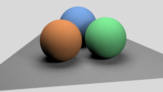
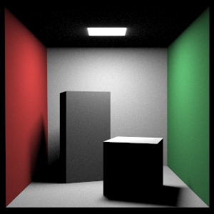

Computer Graphics
Professor Changxi Zheng, Columbia University
Spring 2021
The projects assigned throughout this course were meant to serve as a basic foundation of the principles of computer graphics.
Projects included tasks that spanned the entire graphics pipeline from scripted scenes that involved different rendering techniques to object loading
and fragment and vertex shading techniques. The course required an extensive knowledge of the rendering equation as well as knowledge about
mesh manipulation and data structures used to represent such meshes. Techniques were implemented in Java.
Fragment shader, image texture mapping and procedural texture mapping.


Direct Only Illumination


Brute Force Path Tracing